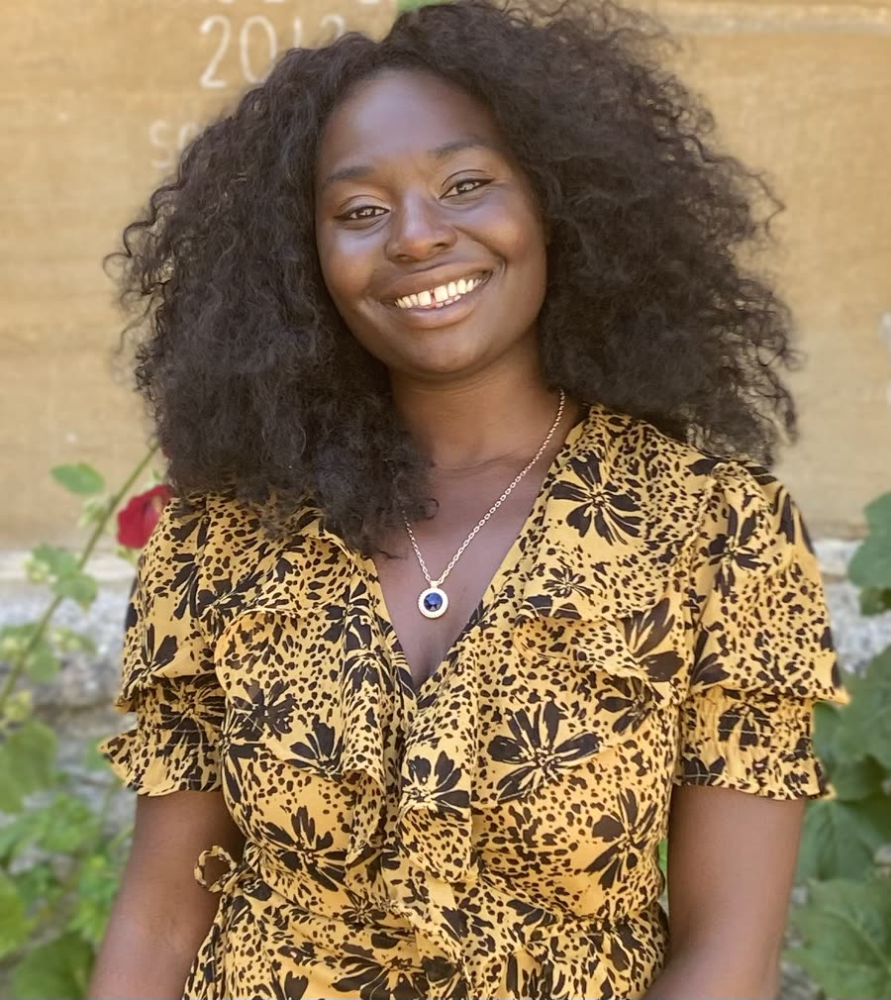
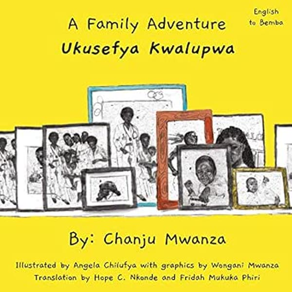
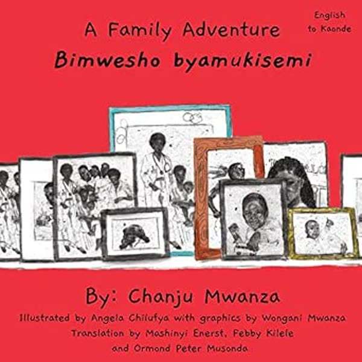
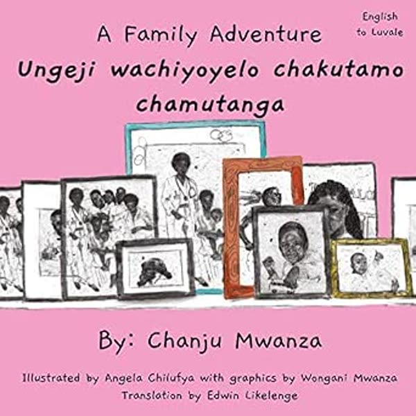
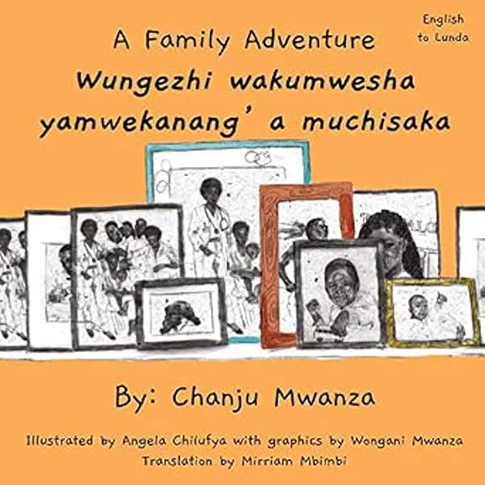
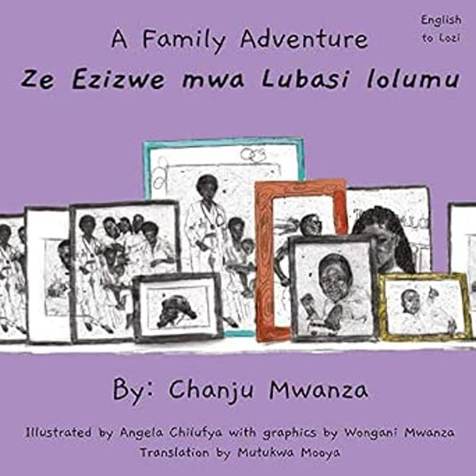
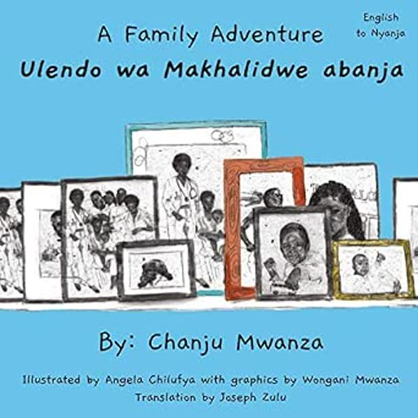
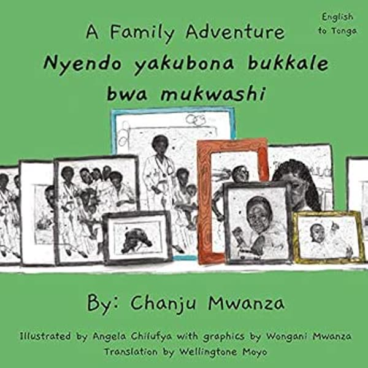

Hello, I'm Chanju Mwanza.
I am a researcher, policy specialist, storyteller, and community engagement practitioner. My work explores how research, participation, and storytelling can support learning, amplify community voices, and contribute to positive social change.
I have expertise in education, gender equality, youth participation, international development, participatory research, community storytelling, policy and advocacy, and knowledge exchange. I am also currently undertaking doctoral research exploring digital storytelling as a decolonial approach to climate justice education.
Explore my site to learn about the Zambian Narratives Project, my research, policy and advocacy consulting services, or just learn more about me!
The Zambian Narratives Project
Every child deserves stories rooted in their language, culture, and heritage.
The Zambian Narratives Project creates bilingual and multilingual children's books that help children and young people in Zambia and across the diaspora connect with language, culture, stories, and heritage.
Explore the ProjectExplore the Books






Research, Policy & Community Engagement
I work with organisations to design research, strengthen policy and advocacy, engage communities, and communicate complex issues in accessible and meaningful ways.
My work combines participatory research, policy analysis, facilitation, and storytelling to support projects that centre lived experience and drive meaningful change. I help organisations generate evidence, influence decision-making, and amplify community voices, with expertise in education, gender equality, youth participation, international development, policy and advocacy, participatory research, and knowledge exchange.
Interested in working together?
I am available for research, policy, engagement, facilitation, and storytelling projects with a range of organisations, including charities, NGOs, private foundations, academic institutions, and community organisations.
I'd love to hear from you. Whether you are looking for research support, policy expertise, community engagement, facilitation, or creative approaches to knowledge sharing, please get in touch to discuss a project or collaboration.